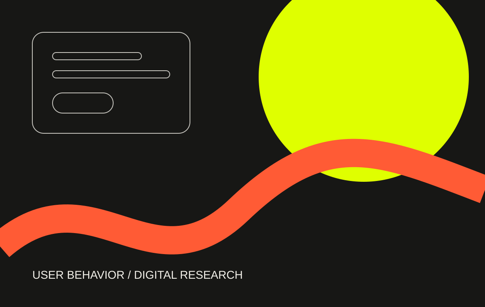
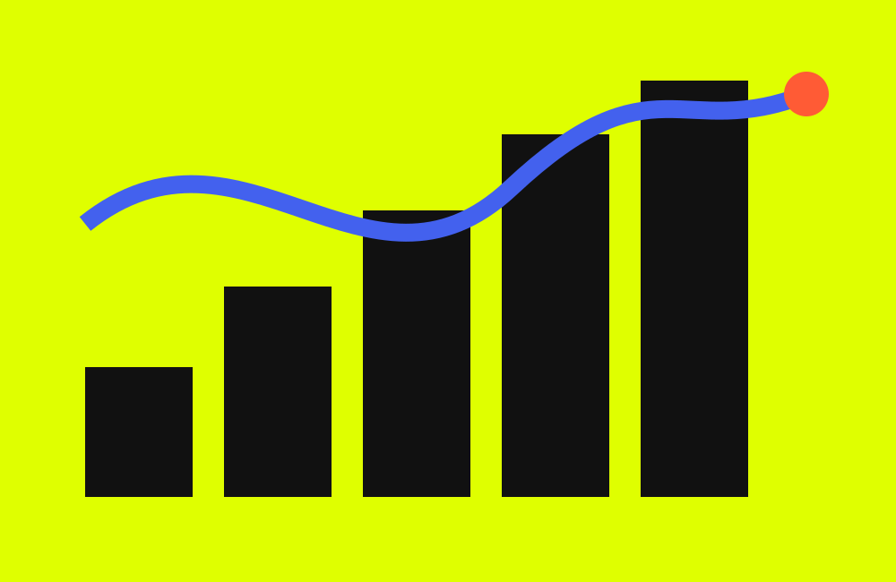
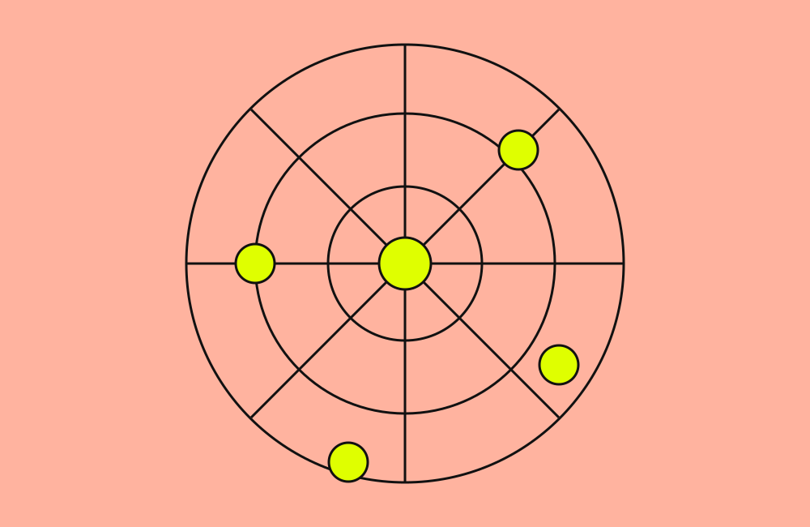
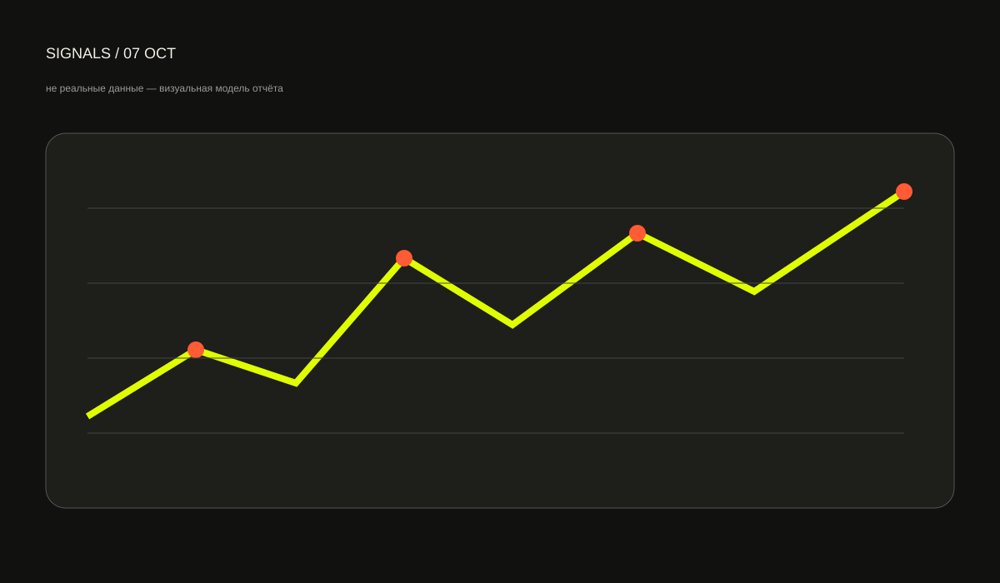

Как люди
ведут себя
в digital.
«Наблюдения» — исследовательский журнал о пользовательском поведении, интерфейсах и данных. Разбираем привычные цифровые сценарии и учимся видеть за метриками реальные действия.

STORY
↓
Не «сколько было просмотров», а почему пользователь сделал именно так и что можно проверить данными.
Главное наблюдение
Пользовательский путь редко ломается одним большим решением. Чаще — несколькими маленькими точками трения, которые по отдельности кажутся неважными.

Почему пользователи бросают формы до отправки
Разбираем пять точек трения: от первого поля и непонятного формата до ошибки, после которой проще закрыть вкладку.

Метрика без контекста — просто число
Почему рост показателя не всегда означает улучшение продукта.

Что статистика посещений знает о пользователе
От источника трафика до точки выхода: читаем не цифры, а маршрут.
Нулевой результат поиска — тоже интерфейс
Почему пустая выдача должна помогать продолжить сценарий.
Сначала качество данных, потом графики
Шесть проверок, которые полезно сделать до интерпретации отчёта.
Откуда вы о нас узнали?
Что источники трафика говорят о контексте пользовательского решения.
Данные — это след поведения
Сами по себе числа ничего не объясняют. Они становятся полезными, когда связаны с вопросом, сценарием и контекстом.
Сначала формулируем вопрос, потом выбираем показатель.
Проверяем качество и полноту исходных данных.
Смотрим на путь, а не на одну изолированную метрику.
Фиксируем гипотезу, которую можно проверить.

Три оптики
Один и тот же цифровой продукт можно рассматривать как интерфейс, набор измеримых сигналов и среду реального пользовательского поведения.